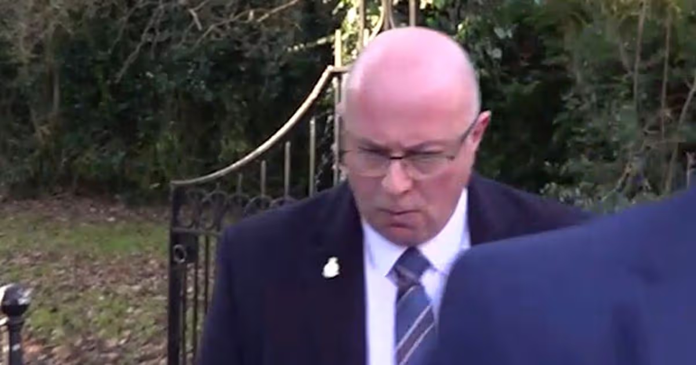

Police - 2022-07-08: PC Mark Roberts Killer
Gateshead, England, UK
PC Mark Roberts Gateshead Crime Dangerous Driving
PC Mark Roberts was found guilty of causing death by dangerous driving after colliding with a motorcycle during an emergency response.
Source#PC Mark Roberts #Gateshead #Crime #Dangerous Driving
Thumbnail

People Involved
| Name | G | Nationality | Role | Age | Date of Birth | Offence(s) | Sentence |
|---|---|---|---|---|---|---|---|
| Mark Roberts | 🌐 | Unknown | Offender | 35.0 | Unknown |
Causing Death by Dangerous Driving
|
Awaiting Sentence
|
| Ronald Pinkney | 🌐 | Unknown | Victim | 77.0 | Unknown | ||
| Muriel Pinkney | 🌐 | Unknown | Victim | 74.0 | Unknown |

PC Mark Roberts was found guilty of causing death by dangerous driving after colliding with a motorcycle during an emergency response. The incident occurred on Dunston Road Gateshead. PC Mark Roberts ran a red light and smashed into a motorcycle being ridden by a married couple. The rider Ronald Pinkey and his wife Muriel were thrown into the air resulting in serious injuries. Ronald survived but his wife was killed from head and neck injuries. Ronald suffered multiple fractures. The collision was filmed on Ronald's helmet camera, as well as on another dash cam. The prosecution argued successfully that Roberts driving fell far below the expected standard, violating police protocols and traffic regulations. The jury also returned a verdict in under an hour. He's now been suspended from the police and will be sentenced at the start of April. Like, subscribe and share if you find this information useful.